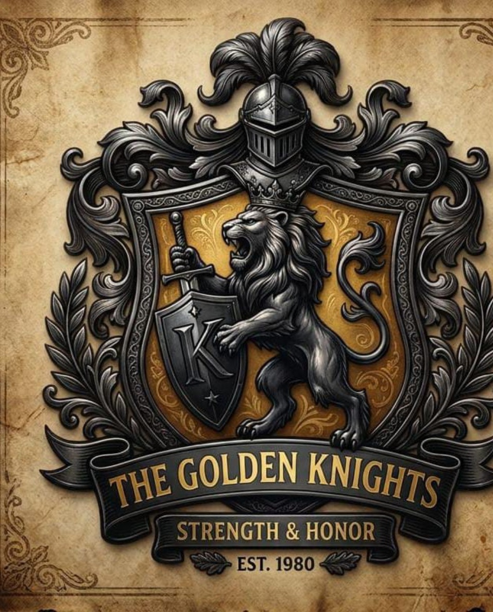
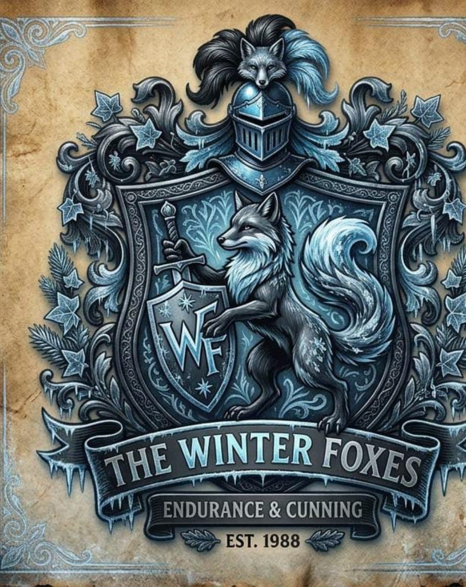
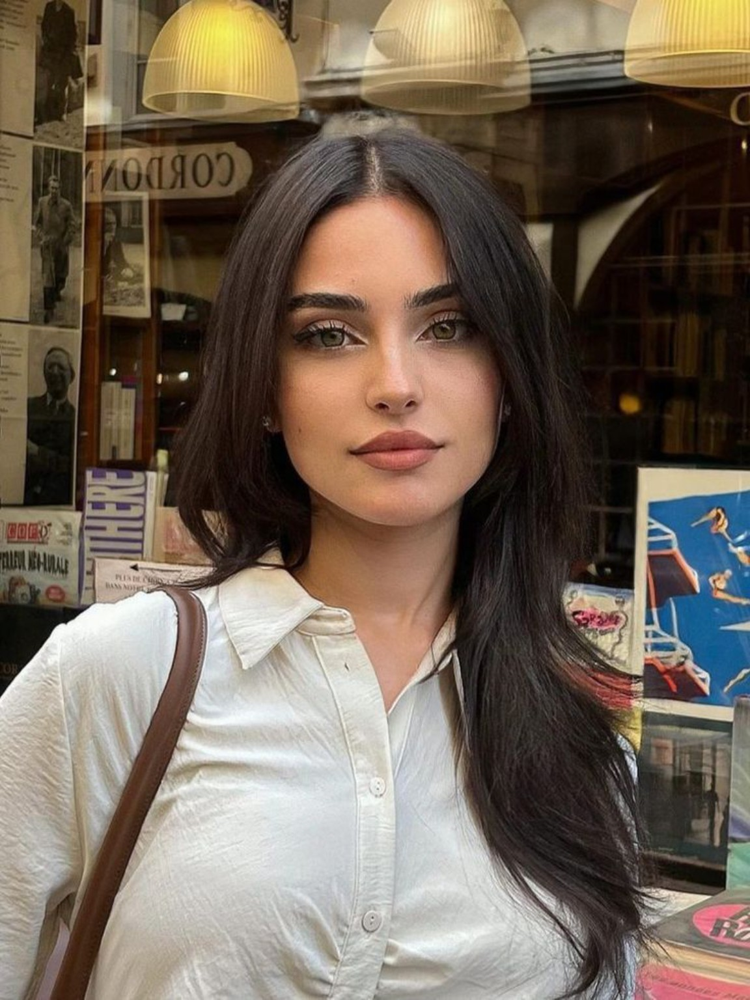
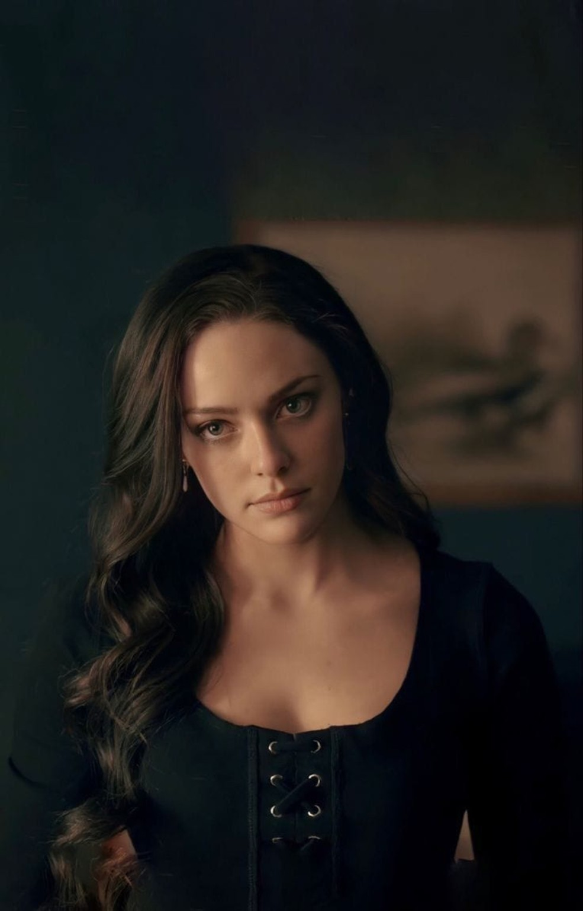
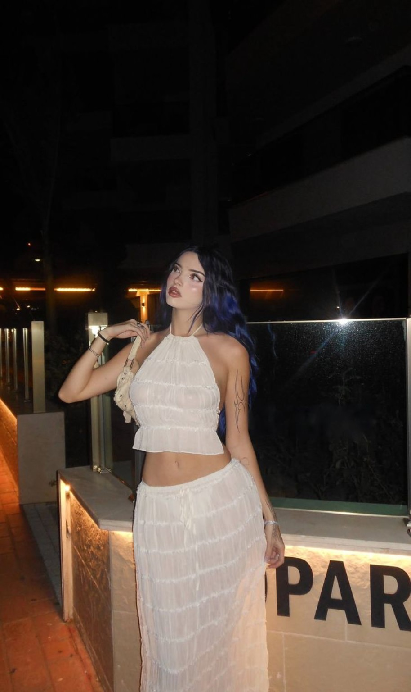
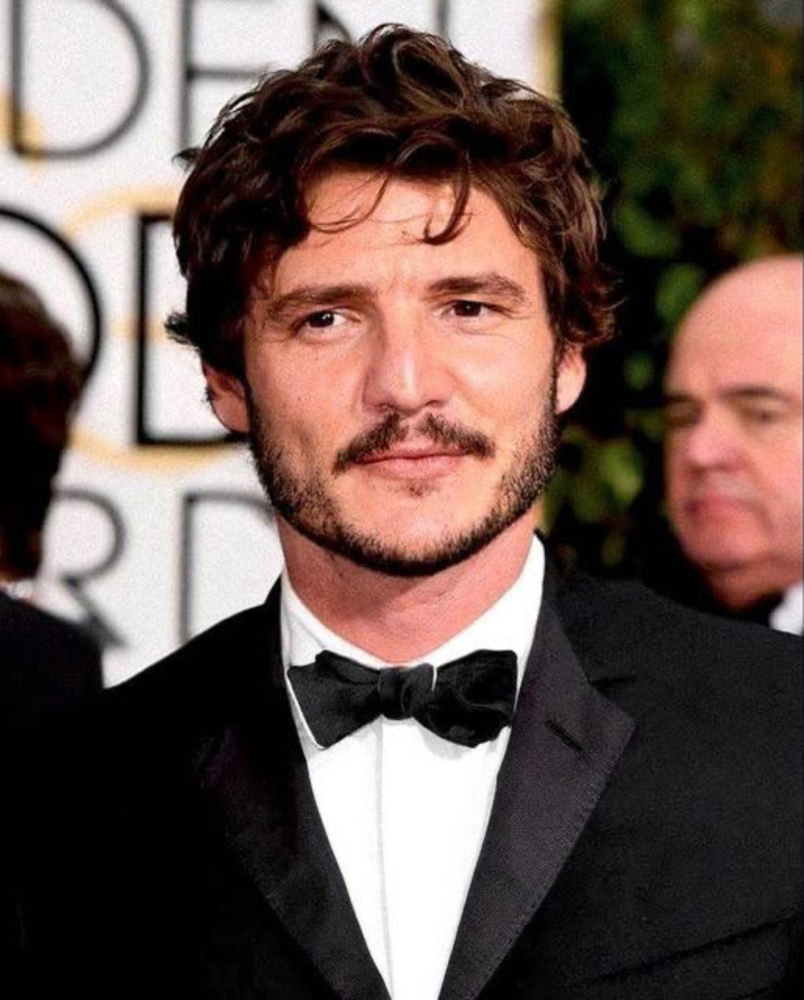

01

The Golden Knights
STRENGTH & HONOR
Na Universidade Lomonosov, tradição, influência, segredos e escolhas se encontram em um novo ciclo.
“The jester always laughs last.”
A Universidade Lomonosov ocupa o centro do universo de Red Masquerade. Fundada em 1755, sua história atravessa gerações e permanece ligada à tradição, ao prestígio e à influência exercida por seus estudantes e pelas instituições que a cercam.
Fundada em 1755, a universidade carrega séculos de tradição acadêmica. Sua existência atravessou diferentes períodos históricos e consolidou a instituição como um dos grandes centros de formação e influência de Moscou.
A vida dentro da Lomonosov não se limita às salas de aula. A universidade possui uma dimensão acadêmica e social própria, onde estudantes convivem, constroem relações, participam de atividades e encontram diferentes grupos que disputam espaço e influência.
Por trás da imagem de prestígio existe também uma relação próxima com famílias, empresas e organizações privadas. Essa rede faz com que determinados nomes e acontecimentos ultrapassem os limites do campus.
A Lomonosov possui estrutura pública, mantendo uma tradição acadêmica construída ao longo de séculos.
A universidade é marcada por tradição, reputação e influência dentro da sociedade de Moscou.
Cursos, atividades extracurriculares, esportes, arte e organizações estudantis fazem parte da rotina.
Além da formação acadêmica, o campus é cenário para relações, rivalidades, festas, eventos e acontecimentos.
Os estudantes podem encontrar diferentes formas de moradia durante sua permanência na universidade: alojamentos, casas das fraternidades ou residências fora do campus.
As três fraternidades ocupam posições diferentes dentro do universo da Lomonosov. Cada uma possui sua própria história, identidade, hierarquia, princípios e tradições.

STRENGTH & HONOR

ENDURANCE & CUNNING

STRENGTH & RELENTLESS
Fundada em 1907, a Golden Knights é a mais antiga entre as três fraternidades estabelecidas no universo atual da Lomonosov.
Sua identidade é construída sobre a ideia de força e honra. A fraternidade mantém uma estrutura rígida e hierárquica, valorizando vínculos internos, lealdade e discrição.
Sua sede está localizada em um clube privado de elite em Moscou, reforçando a distância entre a fraternidade e a vida universitária comum.
1907.
Exclusivamente masculina.
Dourado e preto.
Leão.
Clube privado de elite em Moscou.
Candidatura aberta, sem período específico.
Líder, Vice-líder, Conselho, Membros, Novatos/Candidatos e Mentor.
Lealdade, honra, discrição, hierarquia e proteção da fraternidade.
Jantares de gala e reuniões secretas em porões históricos.
O desafio de entrada não é divulgado no site.
Fundada em 1957, a Winter Foxes possui uma identidade diretamente ligada à Universidade Lomonosov e à sua ala histórica.
A fraternidade feminina se construiu ao redor de valores como resistência, astúcia, discrição e proteção das informações internas.
Para as Winter Foxes, informação possui valor. A coleta, a troca e o uso estratégico de segredos fazem parte de sua cultura e de suas tradições.
1957.
Exclusivamente feminina.
Prata e azul-gelo.
Raposa.
Ala histórica da Universidade Lomonosov.
Candidatura aberta, sem período específico.
Líder, Vice-líder, Conselho, Membros, Novatas/Candidatas e Mentor.
Lealdade, discrição, proteção, hierarquia e cuidado com informações internas.
Coleta e troca de informações, uso estratégico de segredos e circulação de informações privilegiadas.
O desafio de entrada não é divulgado no site.
Fundada em 1982, a Iron Crows representa uma estrutura diferente das duas fraternidades mais antigas.
O grupo é misto e possui poucas regras, dando grande importância à liberdade individual e à responsabilidade pelas próprias escolhas.
Sua sede, um clube noturno privado em Moscou, combina com a reputação construída ao redor de festas, riscos, jogos e acontecimentos exclusivos.
1982.
Grupo misto.
Cinza e vermelho-sangue.
Corvo.
Clube noturno privado em Moscou.
Candidatura aberta, sem período específico.
Líder, Vice-líder, Conselho, Membros, Novatos/Candidatos e Mentor.
Liberdade, lealdade e responsabilidade pelas próprias escolhas.
Festas, jogos de azar, desafios de risco e eventos exclusivos ou secretos.
O desafio de entrada não é divulgado no site.
O jornal da universidade ocupa um espaço importante dentro da vida acadêmica e social da Lomonosov. Notícias, matérias, entrevistas e informações circulam através de sua redação.
A estrutura do jornal é formada por cargos definidos e vagas limitadas. A administração do jornal é conduzida pela editora-chefe Taryn Frost Durant.
Além das matérias oficiais, o jornal também possui o Burn Book, espaço associado a informações e fofocas enviadas pelos participantes.
Taryn Frost Durant.
Redação com cargos definidos e vagas limitadas.
Espaço para informações e fofocas.
Informações poderão ser enviadas através do formulário definido pela administração.
Existe uma parte da história da Lomonosov que não pertence oficialmente à universidade, às fraternidades ou ao jornal. É nesse espaço que surge a RED MASQUERADE.
A RED MASQUERADE está diretamente ligada ao mistério que envolve o universo do RPG. Sua presença se manifesta através de publicações, informações e segredos que chegam aos participantes.
O Jester é a figura associada à RED MASQUERADE. Sua identidade permanece desconhecida.
A identidade e os segredos do Jester não serão revelados no site.
O nome de Ekaterina Volkov está ligado ao surgimento da página dentro dos acontecimentos de 2026.
A RED MASQUERADE poderá publicar informações relacionadas aos acontecimentos.
Informações e segredos fazem parte do funcionamento da narrativa.
Informações poderão ser enviadas conforme os mecanismos definidos pela administração.
A seleção das informações publicadas fica sob responsabilidade da administração.
A Universidade Lomonosov é feita de pessoas. Médicos, professores, funcionários e figuras ligadas às fraternidades compõem o ecossistema da instituição. Cada um carrega sua própria história, seu papel e suas motivações.




Athena Lare Trevarrow é uma médica dedicada e precisa, conhecida por sua capacidade de tomar decisões rápidas em situações de vida ou morte. Especialista em emergências neonatais e cirurgias cardíacas, construiu uma carreira sólida no hospital universitário.
Nascida na França, Athena pertence a uma linhagem da antiga monarquia e cresceu cercada pelo peso de seu sobrenome. Sua posição familiar foi parte do que a levou à Lomonosov, onde também construiu sua própria reputação através da liderança e da medicina.
Durante seus anos como estudante, Athena liderou as Winter Foxes. Após se formar, deixou a posição de liderança e passou a atuar como conselheira da fraternidade, função que mantém até hoje e que é de conhecimento público.
Sua ligação com a fraternidade permanece forte, mas Athena não vive presa ao passado. Atualmente, sua principal dedicação é a medicina e o hospital universitário.
Athena não possui nenhum segredo relevante escondido de sua história. O que existe sobre seu passado e sua ligação com as Winter Foxes é conhecido.
Ophelia é uma das médicas mais jovens e talentosas da Lomonosov. Sua trajetória é incomum: antes de construir sua carreira na medicina, serviu no exército alemão.
Depois de deixar a carreira militar, especializou-se em neurologia e construiu uma reputação internacional, sendo chamada para coordenar pesquisas e projetos científicos dentro da universidade.
Sua postura fria e calculista esconde uma mente brilhante e uma capacidade impressionante de análise. Ophelia observa antes de agir e raramente demonstra aquilo que está pensando.
Ela não confia facilmente nas pessoas e mantém grande parte de seus colegas à distância. Ainda assim, sua dedicação à medicina e à pesquisa é inquestionável.
Isabel Elizabeth Frost Durant construiu sua carreira defendendo pessoas em momentos de vulnerabilidade. Especialista em Direito de Família, atua em casos de guarda, divórcio, adoção e sucessões.
Além de sua atuação jurídica, Isabel também é professora de Direito na Universidade Lomonosov, levando para a sala de aula a experiência acumulada ao longo de sua carreira.
Sua sensibilidade e firmeza a tornaram uma figura de confiança dentro e fora da universidade. Muitos alunos procuram Isabel para orientação em questões pessoais e familiares.
Isabel é conhecida por ouvir com atenção e transformar histórias complexas em argumentos sólidos. Apesar da serenidade, é uma mulher determinada que não recua diante de injustiças.
Eloy Caelan Donavan Durant é professor de Direito da Lomonosov e advogado criminal. Sua entrada no corpo docente aconteceu no início do ano letivo, quando foi convidado para lecionar Direito Empresarial e Criminal.
Sua carreira como advogado, embora marcada por poucos casos, sempre foi guiada pela ética e pela sinceridade. Essas mesmas características aparecem em sua maneira de ensinar.
Eloy não suporta a hipocrisia e não se curva facilmente à hierarquia da universidade. Essa postura faz dele uma figura controversa entre colegas e alunos, mas também alguém respeitado por aqueles que valorizam sua franqueza.
Katya Sokolova é a assistente pessoal do reitor Vladimir Sokolov e uma das funcionárias mais eficientes da universidade.
É responsável por organizar reuniões, eventos oficiais, documentos e a correspondência da administração. Sua capacidade de manter tudo em ordem fez dela uma presença indispensável na reitoria.
Fora de suas funções administrativas, Katya é membra ativa das Winter Foxes, onde ocupa o cargo de tesoureira.
Discreta, organizada e extremamente leal à fraternidade, Katya possui também um talento natural para encontrar informações. Essa habilidade faz com que seja valiosa tanto para a reitoria quanto para as Winter Foxes.
Vladimir Nikolaevich Sokolov é reitor da Universidade Lomonosov há oito anos. Nascido em São Petersburgo em uma família de intelectuais, construiu uma carreira sólida antes de assumir a liderança da instituição.
Sua formação e trajetória como historiador e diplomata cultural fizeram dele um homem acostumado a lidar com diferentes grupos e interesses.
Vladimir é conhecido por sua postura diplomática e por sua habilidade em negociar com as famílias mais poderosas ligadas à universidade.
Reservado, raramente aparece em eventos sem um propósito claro. Sua posição exige que esteja constantemente equilibrando os interesses acadêmicos, sociais e institucionais da Lomonosov.
Alexei Morozov é o homem responsável por proteger a imagem pública da Universidade Lomonosov. Ocupa o cargo de Diretor de Comunicação e Relações Públicas há quatro anos.
Com uma carreira consolidada em relações públicas e assessoria de imprensa, trouxe para a universidade uma abordagem moderna e estratégica para lidar com a imagem institucional.
Alexei acompanha a maneira como acontecimentos, eventos e decisões da universidade chegam ao público. Seu trabalho exige discrição, planejamento e capacidade de controlar situações delicadas.
Ele também é responsável por supervisionar o The University Echo, mantendo uma ligação direta com a comunicação oficial da instituição e com a redação do jornal.
O universo do RPG se estende para além das salas da universidade. O campus e Moscou possuem espaços que poderão se tornar importantes para a narrativa.
Centro da estrutura universitária.
Espaço acadêmico da universidade.
Um dos espaços culturais.
Um dos locais existentes no campus.
Estruturas acadêmicas e científicas.
Espaço destinado aos esportes.
Uma das estruturas esportivas.
Espaço esportivo e recreativo.
Uma das áreas do campus.
Estrutura médica da cidade.
Estrutura de segurança pública.
Local ligado à perícia.
A vida acadêmica e social da Lomonosov é marcada por eventos que reúnem estudantes, fraternidades, membros da universidade e convidados.
O início de um novo ciclo universitário.
Uma das grandes noites do calendário.
Competição e rivalidade entre estudantes.
Celebração das atividades artísticas.
Semana dedicada ao jornal universitário.
Evento envolvendo as três fraternidades.
Um dos eventos sociais do calendário.
Encerramento do ciclo acadêmico.
Acontecimentos especiais poderão surgir ao longo do RPG.
Os acontecimentos que formam a base histórica do universo conhecido até o início do RPG.
A Universidade Lomonosov é fundada.
Fundação da Golden Knights.
Fundação da Winter Foxes.
Fundação da Iron Crows.
Retorno dos estudantes e morte de Ekaterina Volkov.
Surgimento da RED MASQUERADE.
As regras existem para preservar a organização, a narrativa e a convivência entre todos os participantes. O objetivo é permitir liberdade dentro do universo sem transformar a liberdade em prejuízo para os demais jogadores.
O Red Masquerade é um RPG textual. As ações, relações e acontecimentos dos personagens são desenvolvidos através da escrita.
As interações devem respeitar o mínimo de 20 linhas estabelecido pela administração.
Cada jogador poderá possuir até dois personagens, respeitando as condições determinadas pela administração.
Informações conhecidas pelo jogador, mas não pelo personagem, não podem ser utilizadas como conhecimento dentro da narrativa.
Escolhas possuem consequências. Ações realizadas dentro do RPG podem alterar relações, situações e caminhos narrativos.
A morte de um personagem deverá ocorrer mediante acordo quando não estiver diretamente ligada ao plot central.
Nenhum personagem está protegido das consequências da narrativa. Isso inclui personagens ligados à administração.
A troca de personagem somente poderá ser realizada durante o período de abertura das fichas.
As reservas serão realizadas durante a semana determinada pelos administradores.
Conteúdo adulto deve ser sinalizado e mantido em ambiente privado adequado.
É proibido copiar personagens, textos, conceitos ou criações pertencentes a outros participantes.
Jogadores que decidirem deixar o RPG devem comunicar a administração.
A ausência prolongada poderá resultar na remoção do jogador, de acordo com as regras da administração.
O descumprimento das regras poderá resultar na remoção do RPG.
Problemas, conflitos ou situações que precisem de intervenção devem ser encaminhados à administração através da ouvidoria.
As fichas e reservas não ficam permanentemente disponíveis dentro do site. A administração disponibiliza os procedimentos através dos canais oficiais durante os períodos determinados.
As fichas e reservas são disponibilizadas pela administração no canal oficial do WhatsApp durante os períodos determinados.
O formulário será enviado no grupo de avisos do RPG quando estiver disponível.